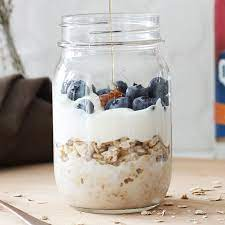

Protein Powder Overnight Oats with Blueberries

Refreshing jar of overnight oats
Pure gold
Ingredients
- ¾ cup almond milk
- ½ cup oats
- 2 tablespoons chia seeds
- 2 tablespoons agave nectar
- 1 scoop vanilla protein powder
- 1 cup frozen blueberries
Steps:
- Mix almond milk, oats, chia seeds,
agave, and protein powder in a bowl
until well combined.
Divide mixture between 2 Mason jars.
Top each jar with 1/2 cup blueberries.
Refrigerate for 8 hours, or overnight.